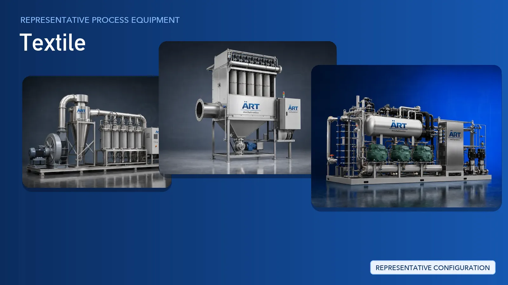

Textile Plant & Machinery Solutions (Dust Extraction, Ventilation & Material Handling Systems)
The textile industry runs from fibre and yarn through to finished fabric and made-ups, including linen, bedsheets, towels, home furnishings, woven and knitted garments, and technical textiles.

About Textile processing
ART Mechatronics supplies the plant infrastructure that surrounds the textile machinery: lint and dust extraction, centralised extraction and filtration, plant ventilation and humidity control, process heating utilities, emission control, material handling and automation controls. Every system is engineered around the mill's existing layout and supplied on a turnkey basis with design, installation, commissioning and after-sales support.
Complete Textile Process Flow
Fibre bales, yarn cones and grey fabric rolls are received and moved from the godown into the production halls.
Keeps material moving between storage and production areas.
Fly, lint and fibre dust released during bale opening, yarn handling, weaving, knitting and fabric processing are captured close to the point where they are generated.
Ensures:
- Cleaner air inside the production hall
- Less lint settling on machines and fabric
- Safer working conditions for operators
Common lint and dust sources in a textile plant:
- Bale opening and blow room areas
- Carding, drawing and spinning halls
- Weaving and knitting sections
- Fabric inspection and folding areas
- Cutting and made-up sections
Air drawn from multiple machines and sections is carried through a common ducting network to central filtration units, with collected lint discharged for disposal or reuse.
Suitable for mills with many extraction points across several halls.
Spinning, weaving and knitting halls are supplied with circulated, conditioned air so that working conditions stay consistent.
Supports:
- Steady conditions inside production halls
- A more comfortable environment for operators
- Consistent working conditions across shifts
Wet processing sections such as dyeing, printing, drying and finishing draw heat, steam and cooling from central utility equipment.
Provides central heating and cooling support for the processing house.
Process air from dyeing, printing and finishing operations is treated before it is discharged.
Supports compliance with plant emission requirements.
Finished textiles such as linen, bedsheets, towels, home furnishings and garments are handled, baled or wrapped and moved to the dispatch area.
Suitable for domestic supply and export dispatch.
Machinery Required for Textile Plant
Turnkey Textile Plant Solutions
ART Mechatronics offers complete turnkey plant systems for textile mills and processing units, including:
- Process and utility layout design
- Lint and dust extraction system design
- Ducting design and fabrication
- Plant ventilation and humidity control systems
- Process heating and utility equipment
- Material handling, baling and dispatch systems
- Automation & control panels
- Installation & commissioning
- After-sales support
We customize solutions based on:
- Mill section and process stage
- Type of fibre and fabric handled
- Plant layout and number of extraction points
- Ventilation and humidity requirements
- Automation level required
Why Choose ART Mechatronics for Textile
- Experience in lint and dust extraction for fibre-handling plants
- Centralised extraction designed around the mill's existing layout
- Ventilation and humidity control systems for production halls
- Process heating and utility equipment from a single supplier
- Material handling, baling and dispatch systems
- Heavy-duty industrial construction
- Installation, commissioning and after-sales support
- Global export capability
Machinery in a Textile plant
Where it's used
Get pricing & specs for the Textile plant
Share the product, target capacity, current process and plant location. These details help our engineers discuss the right machine or line configuration.
One partner, from design to start-up
ART Mechatronics designs, manufactures, installs and commissions your Textile plant solution with regional presence in India, UAE and Thailand.